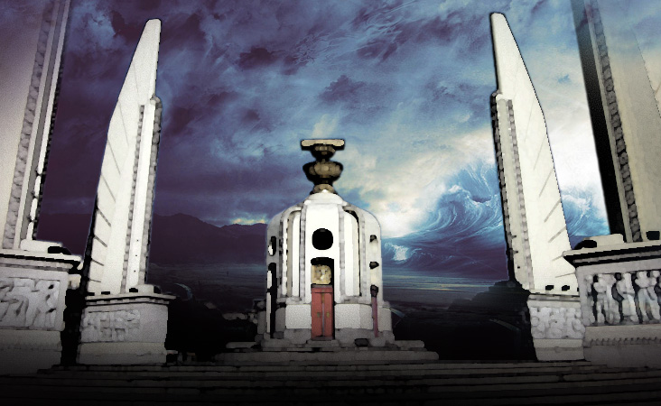

ความหมายของประชาธิปไตย
พจนานุกรมฉบับราชบัณฑิตยสถาน พุทธศักราช 2525 ให้ความหมายประชาธิปไตยว่า เป็นแบบ การปกครองที่ถือมติปวงชนเป็นใหญ่ ส่วนคำว่าระบอบหมายถึงแบบอย่าง ธรรมเนียม ระเบียบการปกครอง ดังนั้น คำว่าระบอบประชาธิปไตย จึงหมายความว่าแบบอย่างหรือธรรมเนียมการปกครองที่ถือมติปวงชนเป็นใหญ่ “ประชาธิปไตย” ตรงกับคำในภาษาอังกฤษว่า Democracy ซึ่งมาจากศัพท์ภาษากรีกว่า Demos หมายถึงประชาชน กับ Kratien หมายถึง การปกครอง ดังนั้นประชาธิปไตยหรือ democracy จึงหมายถึงการปกครองโดยประชาชน โดยอำนาจสูดสุดในการปกครองจะมาจากประชาชน และรัฐบาลจะคงอยู่ในอำนาจต่อไปได้เมื่อวาระสิ้นสุดลง ก็ต่อเมื่อประชาชนผู้เลือกตั้งเห็นว่ารัฐบาลสามารถสนองตอบต่อเจตนารมณ์ของประชาชนได้อย่างมีประสิทธิภาพเท่านั้น

หลักการของประชาธิปไตย
ประชาธิปไตยมีพื้นฐานอยู่บนความเชื่อในความสำคัญและศักดิ์ศรีของปัจเจกบุคคล ความเชื่อในความเสมอภาคของมนุษย์ และความเชื่อในความจำเป็นที่จะต้องมีความเป็นอิสรเสรี ประชาธิปไตยจึงประกอบด้วยหลักการต่างๆ ดังต่อไปนี้1. เสรีภาพ (Liberty) คืออิสรภาพของบุคคลที่จะกระทำการอย่างใดอย่างหนึ่งตามความประสงค์ของตนโดยไม่อยู่ภายใต้การกดขี่ของรัฐ เว้นแต่อยู่ภายใต้กรอบกติกาที่กฎหมายกำหนดไว้ เพื่อป้องกันการล่วงละเมิดสิทธิและเสรีภาพของบุคคลอื่น ในหลักประชาธิปไตย เสรีภาพคือกุญแจสำคัญที่จะนำไปสู่ความก้าวหน้าของสังคม
2. ความเสมอภาค (Equality) คือความเท่าเทียมกันของคนในสังคม เป็นความเท่าเทียมกันในความเป็นมนุษย์ และเท่าเทียมกันในฐานะที่เป็นสมาชิกของสังคมเหมือนกัน มีศักดิ์ศรี เกียรติยศ และมีคุณค่าในความเป็นคนอย่างเดียวกัน ความเสมอภาคประกอบไปด้วย 2.1 ความเสมอภาคในความเป็นมนุษย์ 2.2 ความเสมอภาคตามกฎหมาย 2.3 ความเสมอภาคในด้านโอกาส 2.4 ความเสมอภาคในทางการเมือง 2.5 ความเสมอภาคในการใช้สิทธิเลือกตั้ง 2.6 ความเสมอภาคในการสมัครรับเลือกตั้ง 2.7 ความเสมอภาคในทางเศรษฐกิจ
3. อำนาจอธิปไตยเป็นของปวงชน (Popular Sovereignty) คือ ปัจจัยที่เชื่อว่าสังคมก่อตั้งขึ้นโดยความยินยอมของประชาชน ในการที่จะให้อำนาจอธิปไตยของสังคมส่วนรวมเข้ามาแทนที่เสรีภาพธรรมชาติ โดยทุกคนจะมีส่วนในอธิปไตยนั้นๆ เท่าเทียมกัน ตามหลักการนี้ การปกครองในระบอบประชาธิปไตยจึงเป็นการปกครองที่ประชาชนเป็นทั้งผู้ปกครอง และผู้ถูกปกครอง ในระบอบประชาธิปไตย เนื่องจากผู้ปกครองมาจากการเลือกตั้งโดยยึดหลักการเสียงข้างมาก จึงมีสิทธิอำนาจอันขอบธรรมในการปกครองประเทศเพราะได้รับสิทธิจากผู้ถูกปกครองโดยตรง
4. หลักการเสียงข้างมากที่คุ้มครองเสียงข้างน้อย (The Rule of Majority) เนื่องจากในระบอบประชาธิปไตย ประชาชนทุกคนมีสิทธิในการตัดสินใจปัญหาบ้านเมืองไม่ว่าจะโดยตรงหรือผ่านผู้แทนราษฎร ซึ่งในความเป็นจริงประชาชนทุกคนย่อมมีความคิดเห็นไม่ตรงกัน ดังนั้นเพื่อเป็นการตัดสินปัญหาจึงต้องยึดเสียงข้างมากที่มีต่อเรื่องนั้นๆ เป็นเกณฑ์ในการตัดสิน ถึงอย่างไรก็ตาม เพื่อเป็นการคุ้มครองสิทธิเสรีภาพและความเสมอภาคของเสียงข้างน้อย หลักประชาธิปไตยจึงต้องประกอบด้วยหลักการคุ้มครองเสียงข้างน้อย (minority right) ด้วย ทั้งนี้ การตัดสินใจโดยล่วงละเมิดสิทธิพื้นฐานของเสียงข้างน้อย ถือว่าเป็นการปกครองโดยระบอบเผด็จการเสียงข้างมาก (Dictatorship of the Majority)
รูปแบบการปกครองในระบอบประชาธิปไตย

การปกครองโดยระบอบประชาธิปไตยสามารถแบ่งเป็น 2 รูปแบบ ดังนี้1. หลักประมุขของประเทศ (Head of State)
1.1 การปกครองระบอบกษัตริย์ภายใต้รัฐธรรมนูญ (Constitutional Monarchy)
พระมหากษัตริย์ในฐานะประมุขของประเทศเป็นศูนย์รวมของอำนาจอธิปไตยซึ่งเป็นของ ประชาชนทั้งมวล โดยจะใช้อำนาจอธิปไตยผ่านอำนาจสามฝ่าย คือ นิติบัญญัติผ่านทางรัฐสภา บริหารผ่านทางคณะรัฐมนตรี และตุลาการผ่านทางศาล ทั้งนี้ พระมหากษัตริย์จะเป็นกลาง และไม่ยุ่งเกี่ยวกับการบริหารราชการประเทศ ประเทศที่ปกครองโดยระบอบนี้ ได้แก่ สหราชอาณาจักร ประเทศไทย และประเทศญี่ปุ่น เป็นต้น1.2 การปกครองโดยมีประธานาธิบดีเป็นประมุข (Presidency)
ผู้ดำรงตำแหน่งประธานาธิบดีมาจากการเลือกตั้ง ของประชาชน ทำหน้าที่เป็นประมุขของรัฐ และในบางประเทศจะทำหน้าที่เป็นประมุขของฝ่ายบริหารด้วย เช่น สหรัฐอเมริกา และ ประเทศอินโดนีเซีย เป็นต้น 2. หลักการรวมและแยกอำนาจ (Separation of Powers)
2.1 การปกครองระบบรัฐสภา (Parliamentary System)ฝ่ายบริหารและฝ่ายนิติบัญญัติจะทำหน้าที่ผ่านรัฐสภา ระบอบรัฐสภาสามารถแบ่งออกได้เป็นรูปแบบสภาเดียว (Unicameral System) และรูปแบบสองสภา (Bicameral System) ในประเทศส่วนใหญ่ที่ปกครองโดยระบอบประชาธิปไตย สมาชิกรัฐสภาจะมาจากการเลือกตั้งทั่วไป แต่ในขณะเดียวกัน ประเทศที่ใช้รูปแบบสองสภา อาจมีสภาใดสภาหนึ่งที่มาจากการเลือกตั้ง ในขณะที่อีกสภามาจากการแต่งตั้งหรือสรรหา ทั้งนี้ ในระบอบรัฐสภา รัฐบาลจะถูกควบคุมและตรวจสอบการบริหารราชการแผ่นดินโดยรัฐสภา ผ่านกระบวนการและอำนาจหน้าที่ที่บัญญัติไว้ในรัฐธรรมนูญ
2.2 การปกครองระบบประธานาธิบดี (Congressional System)มีลักษณะคล้ายคลึงกับระบบรัฐสภา แต่กระบวนการในการจัดตั้งรัฐบาล และแบ่งแยกอำนาจจะแตกต่างกัน ในระบอบนี้ ประธานาธิบดีซึ่งเป็นประมุขของรัฐและฝ่ายบริหาร จะมาจากการเลือกตั้งทั่วไป เมื่อได้รับเลือกตั้งจะมีสิทธิและอำนาจในการแต่งตั้งคณะรัฐมนตรีเพื่อบริหารประเทศ โดยผ่านความเห็นชอบของวุฒิสภา ในขณะที่สมาชิกรัฐสภาทั้งสองสภา จะมาจากการเลือกตั้งทั่วไปที่ไม่เกี่ยวข้องกับการเลือกตั้งประธานาธิบดี ดังนั้น อำนาจนิติบัญญัติ อำนาจบริหาร และอำนาจตุลาการ จึงเป็นอิสระและแยกขาดจากกัน อย่างไรก็ตาม ในเรื่องของการถ่วงดุลอำนาจ ในระบบประธานาธิบดีจะมีกลไกทางรัฐธรรมนูญที่ให้รัฐสภามีอำนาจในการถ่วงดุลฝ่ายบริหาร ผ่านการควบคุมและตรวจสอบการบริหารราชการแผ่นดิน และการลงมติเพื่อกล่าวโทษ (Impeachment) และปลดออกจากตำแหน่ง (Recall) ประธานาธิบดี ประเทศที่เป็นต้นแบบของการปกครองลักษณะนี้ คือสหรัฐอเมริกา
2.3 การปกครองระบบผสม (Mixed System)ประธานาธิบดีเป็นประมุขและบริหารราชการแผ่นดินร่วมกับนายกรัฐมนตรี ในด้านการบริหาร นายกรัฐมนตรีจะเป็นผู้ใช้อำนาจบริหาร และรับผิดชอบต่อรัฐสภา ประธานาธิบดีจะเป็นผู้กำหนดนโยบายต่างประเทศและการเมืองทั่วไป ทั้งนี้ ประธานาธิบดีในระบบการปกครองแบบนี้ จะแตกต่างจากประธานาธิบดีในระบบประธานาธิบดีตามข้อ 2.2 ตรงที่ จะมีอำนาจอนุญาโตตุลาการ ระหว่างรัฐสภากับคณะรัฐมนตรี และมีอำนาจในการประกาศยุบสภา ประเทศที่มีการปกครองลักษณะนี้ อาทิ ประเทศฝรั่งเศส เป็นต้น